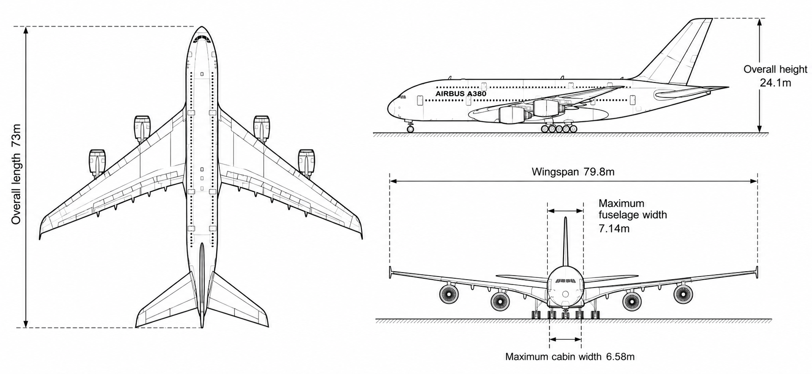
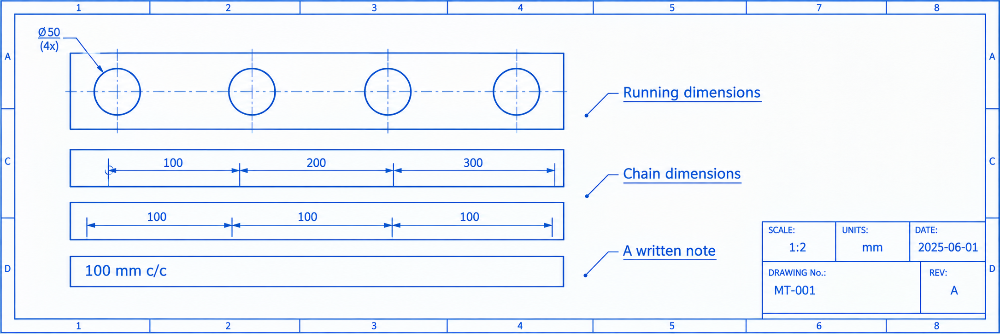
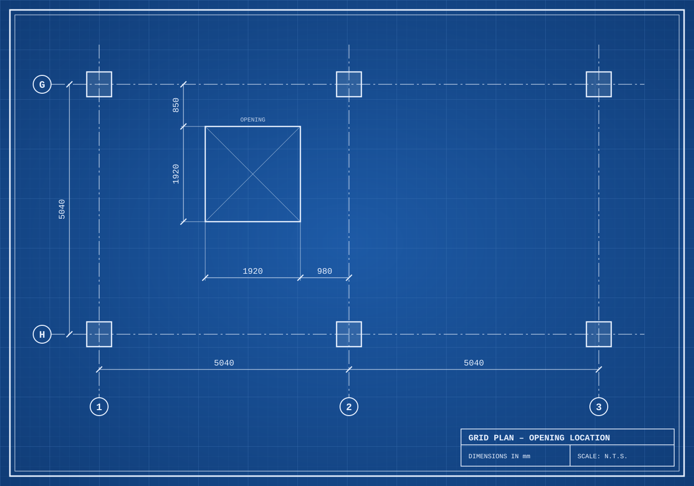
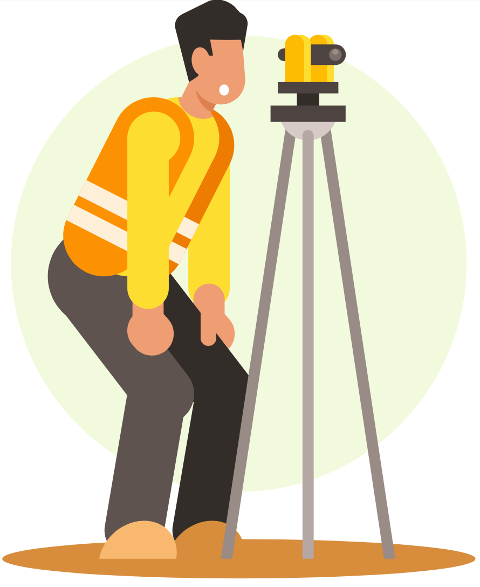
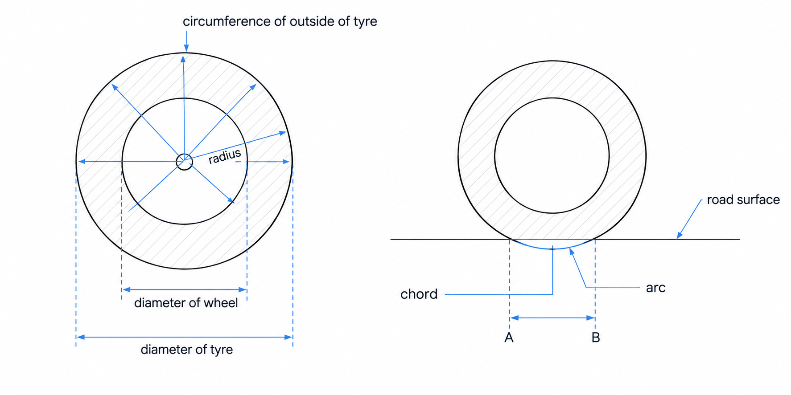
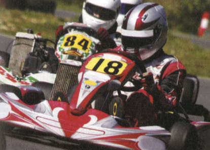
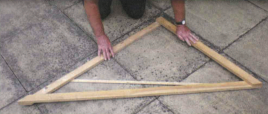

Interactive vocabulary workbook · Technical & engineering English
Unit 1
Almost everything an engineer needs to build something is communicated through drawings. Nearly all of them are now produced digitally, using CAD (computer-aided design) software rather than drawn by hand.
A drawing's scale is the ratio between a length on the page and the real length it represents. A scale of 1:20 means a real object 20 mm long is drawn just 1 mm long. A drawing where every feature keeps the same ratio to real size is drawn to scale; a part drawn bigger than life-size, for clarity, is described as enlarged.
Engineers on site often argue about exactly which view they need — a look from above, a slice through the middle, a 3D impression. Here's the sort of thing you'll overhear:
Fill in each blank with one word from section A above, then check your answers.
Click a description on the left, then click the view it matches on the right.
Write out each abbreviation in full.
Each word below is used exactly once.
Picture a kickoff meeting for a new project — a device, building or installation you know well. Which drawings would your team need to describe it fully, and at what scales? Jot your answer below.
Unit 2
A structural engineer, partway through a new project, emails a more senior colleague with an update.
Priya,
Quick update from yesterday's kickoff meeting for the new depot. The client only gave the architect a short design brief, so she had a lot of freedom — and the concept she's proposing is genuinely ambitious. We're still very early on, though: all we have so far are a handful of rough sketches showing the general look, not proper scale drawings, so we couldn't assess anything in detail yet.
Next, she needs to turn those sketches into preliminary drawings. They're due in three weeks.
When a design team is made up of engineers and consultants from several different organisations, getting drawings to the right people, in the right order, takes real coordination.
Before the first draft of a drawing goes out, someone decides exactly who needs to see it: a drawing might be issued to just one specialist, or circulated to the whole team. Once people have a copy, they can comment on it, asking for particular changes. Each round of feedback leads to a revision: the drawing is redrawn with those changes and given a new revision letter, so drawing 204A becomes 204B once it has been amended. The newest revision becomes the current drawing, and the old one is superseded. Every revision carries a short note explaining exactly what was amended.
Early on, comments can send a design right back to the drawing board, forcing a full redesign. Later in the process, drawings usually only need to be refined slightly.
Once a preliminary drawing is finally approved, a senior engineer can sign off on it as a working drawing — one the construction or production team can build from. Even working drawings, though, often go through further revisions once problems turn up on site.
Which word or phrase from section A matches each definition?
Click a word below, then click the group it belongs in. Look at section B to help you.
Click the word that correctly completes each sentence.
Each word below is used exactly once. The first one is done for you.
Think about a design or project you've helped develop — at work, at school, or on your own. Walk through its stages, from the first rough brief to a final, signed-off drawing or plan. Who reviewed it along the way, and what changed between versions?
Unit 3
The page below is from a manufacturing company's internal design-procedure guide.
A design brief for the proposed product is drawn up by the project engineer. It sets out a detailed list of technical objectives the design team must work to, in order to arrive at a design solution.
Key elements of the brief are:
Once a design brief exists, its details are captured on drawings and in specifications — documents describing the materials, dimensions and technical requirements of each component. Producing a specification means an engineer must first evaluate the loads a component will carry: determining which forces apply, then quantifying each one as a number.
Loads are usually quantified against a worst-case scenario, allowing for the harshest realistic conditions — a crane lifting its rated maximum, say, or a component exposed to extreme temperature.
Once loads are quantified, engineers add a factor of safety: an extra margin so the component can carry more than the worst case demands. A factor of 2, for instance, doubles the load a part can safely take. Once this margin is factored in, the component can finally be sized — its dimensions calculated.
Engineers are sometimes accused of overdesigning — piling on more safety margin than necessary, which adds cost. But as the old engineering joke about belt and braces (wearing both, just in case) suggests, a little extra caution is often judged worth the price.
Each word below is used exactly once. Look at section A to help you.
Click the word that correctly completes each sentence. Look at section B to help you.
Each underlined phrase below has a more precise equivalent in sections A and B. Type it into the matching blank.
Most bridge and aircraft designs take account of rare, extreme operating conditions. The key question is how big an added safety cushion to include without piling on unnecessary strength . To work out a number for this risk, engineers weigh the consequences of failure. In high-stakes fields such as aerospace, designing around the harshest situation that could realistically happen is clearly essential. At first this looks expensive, but where the human and financial cost of failure is severe, spending more to prevent accidents can still be good value for money .
Think about overdesign in an area of engineering you know well. How easy is it to predict and quantify the loads involved? How serious would the human or financial consequences of failure be? Given that, how large a factor of safety would you expect to see used?
Unit 4
A dimension describes an object's size. In the definitions below, a plane means an imaginary flat surface (not an aircraft) — on drawings, planes are shown as lines marking where a dimension is measured from and to, positioned to strike (touch) the faces (edges or surfaces) of a component. Dimensions are very often measured along either a horizontal plane or a vertical plane.

A surface described as level is both horizontal and flat (smooth). A flat surface, though, isn't necessarily horizontal — it could just as easily be vertical, or inclined (sloping at an angle to the horizontal or vertical plane).
Vertical faces, such as a building's walls, are described by engineers as plumb. A structure that's slightly inclined away from vertical is said to be out of plumb.
Complete the dimensions of a cable-stayed viaduct, using the word bank below. Look at section A to help you.
Decide whether each statement is true or false. Look at sections A and B to help you.
Click the word that correctly completes each part of the text about extra-high voltage (EHV) power lines. Look at sections A and B to help you.
On very long suspension bridges, when the distance between the two towers is measured horizontally at their bases, it turns out to be very slightly less than the distance between their tops — even though each tower is built perfectly plumb. Why would that be, if neither tower is out of plumb?
Think of a product with a fairly simple shape that you're familiar with. Which dimensions would need to be specified on its drawing, in order for it to be manufactured correctly?
Unit 5
Drawings often need to fix the position of several similar features — a row of bolt holes, say — relative to one another. A centreline (CL) is drawn through the centre of each feature, and the distance between two centrelines is a centre-to-centre (c/c) dimension.
These distances can be shown two ways. Running dimensions are all measured from a single origin, so each figure is a cumulative total. Chain dimensions instead give the distance between each pair of neighbouring features, one link at a time.

An offset is always measured at a right-angle to the line it's taken from — engineers also say at 90 degrees to it, or simply at right-angles to it.
On large projects, especially structures, a grid of reference lines is drawn across every floor plan so that any column, wall or opening can be pinned down quickly. Numbered gridlines run parallel with one another in one direction; lettered gridlines run parallel with each other in the other direction, perpendicular to (at a right-angle to) the numbered set. Columns usually sit exactly where a numbered and a lettered gridline intersect.


An opening or other feature that doesn't sit on a gridline is given coordinate dimensions — two measurements, each taken at a right-angle from a different gridline. A site engineer uses these to set out the feature: marking its position on site. That usually means squaring off the gridlines — marking a line at a right-angle to them, often checked with a theodolite, an optical device for measuring angles — and then measuring along it with a tape measure.
It's good practice to double-check a rectangular setting-out by comparing its two diagonal measurements: if the shape is a true rectangle, the diagonals are equal. Pythagoras's theorem can also confirm a diagonal's expected length from the two sides that meet it — for a 3000 by 4000 mm rectangle, for instance, each diagonal should measure 5000 mm.
Each underlined phrase below has a more precise equivalent in section A. Type it into the matching blank.
A row of mounting holes for a new bracket is spaced 150 mm apart, centre to centre . Every measurement on the drawing is taken from the line drawn through the centre of the first hole. To fix the position of a nearby lug, the draughter must give its exact position using two measurements at a right-angle to that line. Each of those two measurements is an amount measured sideways from the line. Because the lug isn't on the centreline itself, both measurements must be taken at 90 degrees to it, never at an angle.
Each word below is used exactly once. Look at section B to help you.
Click a precaution on the left, then click the reason it matches on the right.
Click the word that correctly completes each sentence. Look at sections A and B to help you.
Think of a structure, machine or product you know. How would you locate one key point or opening on it — which reference lines, offsets, or grid coordinates would you use, and how would you double-check the result on site?
Unit 6
An engineer is giving a training course to a group of technical sales staff who work for a tyre manufacturer. During the talk, she mentions a number of dimensions relating to circles.

Specific terms are used to describe the circular dimensions of pipes.
Complete the notes made by a salesperson attending the engineer's talk. Use each word from the box exactly once. Look at section A to help you.
Click a definition on the left, then click the pipe term it matches on the right. One question has two possible answers — both are accepted. Look at section B to help you.
One word in each sentence below is wrong. Click the correct replacement from the options given. Look at sections A and B to help you.
Choose an object which has circular and/or curved shapes — for example, a pipe, wheel, or bearing. Describe its key dimensions using as many terms from sections A and B as you can. You could also describe how its shape might change under load or pressure.
Unit 7
It is impossible to produce components with dimensions that are absolutely precise, with sizes exactly the same as those specified in a design. This is because all production processes are imprecise to a certain extent. Therefore, the sizes of several components produced from the same design will vary (differ). Although the variation may only be a few hundredths of a millimetre, sizes will not be 100% accurate (exact) compared with the design.
Because engineers know that accuracy cannot be perfect, in designs they often specify tolerances — that is, acceptable variations in precision. Instead of giving one precise size, a tolerance specifies a range of acceptable sizes — an allowed amount of variation. This is often given as a deviation (difference) from a precise size.
The drawing above shows a shaft with a specified diameter of 88 mm, plus or minus (±) 0.05 mm. This means the diameter may deviate 0.05 mm either side of this size. Therefore, diameters of 87.95 mm and 88.05 mm, which are slightly inaccurate, are still permissible (allowed), as they are within tolerance. However, diameters of 87.94 mm or 88.06 mm are not permissible — they are outside tolerance.
When the permissible deviation in size is very small, we say it is a tight tolerance (or a close tolerance). A large permissible deviation is a loose tolerance. For example:
When one component goes through another, such as a shaft or a bolt going through a hole, the two must fit together — their sizes and shapes must match. The key question is, how tightly (or loosely) should they fit together? There are two main types of fit:
Find words and expressions in section A with similar meanings to the words and expressions below. Look at section A to help you.
Click a statement on the left, then click its related explanation on the right. Look at section B to help you.
Complete the article using the words in the box below. Each word is used according to context. Look at sections A and B to help you.

The advantage of racing in a kart class with a standard engine spec seems obvious — everyone has the same power, so it's driving talent that makes the difference. But things aren't quite that simple. No two standard engines are identical. There will always be a slight (1) in the size of engine parts, since they are manufactured, not to perfectly (2) dimensions, but to specified (3) . Although these differences may only be (4) or (5) a few hundredths of a millimetre, they will nevertheless result in a slight performance gap between any two engines.
One way round this problem (if you have the cash) is to have your engine blueprinted. The process is perfectly legal, as the sizes of all parts remain (6) the tolerances that are (7) for the standard engine specification. However, by carefully matching pairs or groups of parts that are all in either the lower or upper half of the tolerance (8) , a blueprinted engine is built to (9) together very precisely, thanks to almost perfect (10) between moving parts.
Think of a type of product or structure you're familiar with. Imagine you're designing it, and are discussing the tolerances required for different components. Say what tolerances are permissible, both for production (not too tight due to cost), and for quality (not too loose). Say which parts require the tightest tolerances, and explain why.
Unit 8
A manufacturer is considering including both metric and imperial measurements in its product specifications. One of the company's engineers explains the problem with converting between the two systems.
'One problem is, when you convert from metric to imperial you no longer have whole numbers — you get long decimal numbers. For example, one millimetre is nought point nought three nine three seven inches as a decimal. So to be manageable, decimals have to be rounded up or down. You'd probably round up that number to two decimal places, to give you zero point zero four. Now, you might say the difference is negligible — it's so small it's not going to affect anything. But even if it's just a tiny fraction of a unit — one hundredth of an inch (1/100), or one thousandth of an inch (1/1000) — and those numbers are then used in calculations, the rounding error can very quickly add up to give bigger inaccuracies.'

During a TV programme about garden design, the presenter explains the calculations required to make a large setsquare which can be used for setting out. To make one of these, you need to use Pythagoras's Theorem. Measure a length of timber for one of the sides adjacent to the right angle. He makes this 3 feet long. Then square that number — 3 multiplied by 3 equals 9. Then do the same with the other side adjacent to the right angle, made 4 feet long. Work out the square of that — 4 times 4 is 16. Then work out the sum of those two numbers — if I add 16 to 9 … 16 plus 9 is 25. Then calculate the square root of that. The square root of 25 is 5. That means the longest side — the hypotenuse — needs to be 5 feet long. It doesn't matter what length you make the two adjacent sides — if the square of the hypotenuse is equal to the square of each of the adjacent sides, added together, you'll have a perfect right angle.
Now you can also start by making the hypotenuse, square the length of that, then make one of the other sides, square the length of that, and then subtract one from the other. For this example, that would be 25 minus 16. So, 25 less 16 is 9. And the square root of 9 is 3, which gives the remaining side. Alternatively, you can make both the adjacent sides equal — make them the same length. So, take the square of the hypotenuse, which is 25, divide that by 2, which is 12.5, then work out the square root of 12.5 — which requires a calculator!
Use the reading text in A to help you.
Use words from the reading text in A.
Sometimes there is more than one possible answer. Use the reading text in B to help you.
Use one or two words from the reading text in B to fill each gap.
Write down a few examples of some calculations you did recently, or ones that you do frequently, and then explain them.